From conversations to structured evidence for founders
FoundersBrew's AI agent helps early-stage founders move beyond validating their assumptions to gathering evidence from their target audience through agentic discovery interviews.
I took ownership of designing the founder and participant experiences, exploring how AI could support research while keeping people in control of important decisions. My work spanned product UX, Human-AI Experience (HAX), agent workflows and the design of a post-interview bias detection framework.
The problem
The journey from idea to MVP depends on gathering the right evidence to make informed product decisions. However, founders often enter discovery with assumptions about their ideas and unintentionally seek validation rather than genuine insights. Leading questions encourage responses in a particular direction, while feedback scattered across calls, messages, documents, and spreadsheets makes it difficult to identify meaningful patterns.
As a result, founders risk mistaking encouragement for evidence and making build decisions based on weak signals, potentially leading them to build the wrong product.
The challenge is the lack of a structured system that guides founders through discovery with their target audience, helps them gather reliable evidence, identify meaningful patterns, and make informed decisions about what to build.

Biased information = biased decision
The solution
An interview agent that adapts to the conversation and a system that synthesizes the evidence.
Founder context
Founders answer a few questions about their idea, target audience and the problem they are trying to solve. The system combines their inputs with secondary research to build context for discovery.
Adaptive interview
The AI agent uses this context to conduct interviews, asking follow-up questions, listening, probing and clarifying based on what participants share.

Evidence
The system synthesises signals and patterns that helps the founders take the next best action.
Outcome
This led to the development of Bias Detection Framework version 1, a structured approach to identifying potential agent-induced bias in customer discovery interviews. The framework combines contextual LLM evaluation with deterministic validation to produce traceable, evidence-backed findings, helping founders understand where interview responses may have been influenced by the research agent.
Beyond supporting the reliability of user insights, these findings also establish a foundation for future agent improvement. As the framework is tested and refined, reviewed bias findings will be used to build evaluation datasets and inform future agent training, helping the research agent ask more neutral questions over time.
Early product collaborators
"I used the FoundersBrew discovery agent to better understand what products my target audience was looking for. It helped me challenge my assumptions and reduce uncertainty around key business decisions."
Understanding the landscape
The first thing I did was to understand where the FoundersBrew interview agent would stand. I went onto understand who our competitors were, what other adaptive interview agents were available.

This not only provided direction but also helped me think how this agentic system should work
But will people talk to an agent?
When the agent first came up my first instinct was to question if people will talk to the agent, and AI-led interviewing wasn't entirely new, competitors were already building compelling conversational research products. More recent research by Wuttke (2025) demonstrated the feasibility of LLM-led interviews, while Barari (2026) highlighted the potential for richer responses.
Human in the loop
I designed the workflow around a human-in-the-loop approach, where AI handles research and analysis while founders retain control over key decisions. The challenge was deciding where the system should take responsibility and where founders needed to remain involved.
This shaped three parts of the experience, how founders provide context, choose what gets tested, and control the evidence used in synthesis.

Helping founders provide the right context
The process begins with founders describing their ideas, target audiences, and the problems they want to solve. Their responses provide the context for the system's research and recommendations. My first iteration was a chat like experience, however, when I tested an early prototype with founders, I found that the conversational format challenged their mental model rather than helping them structure their thoughts.

Letting founders decide what gets tested
Once founders provide their context, FoundersBrew combines their inputs with secondary research to generate hypotheses, ranked by risk. While the system recommends which assumptions to test first, the final decision remains with the founder.
I designed a slide-out panel where founders can review the hypotheses, understand how they were prioritized, and reorder, deselect, or add their own assumptions without losing their place in the workflow. Following Human-AI Experience (HAX) guidelines, this makes AI recommendations transparent while allowing founders to override them.
Giving founders control over the evidence
Agent led interviews can introduce bias through leading questions or inaccurate interpretations, affecting the reliability of the final synthesis. To address this, I designed an option for founders to exclude questionable interviews without deleting the original research.
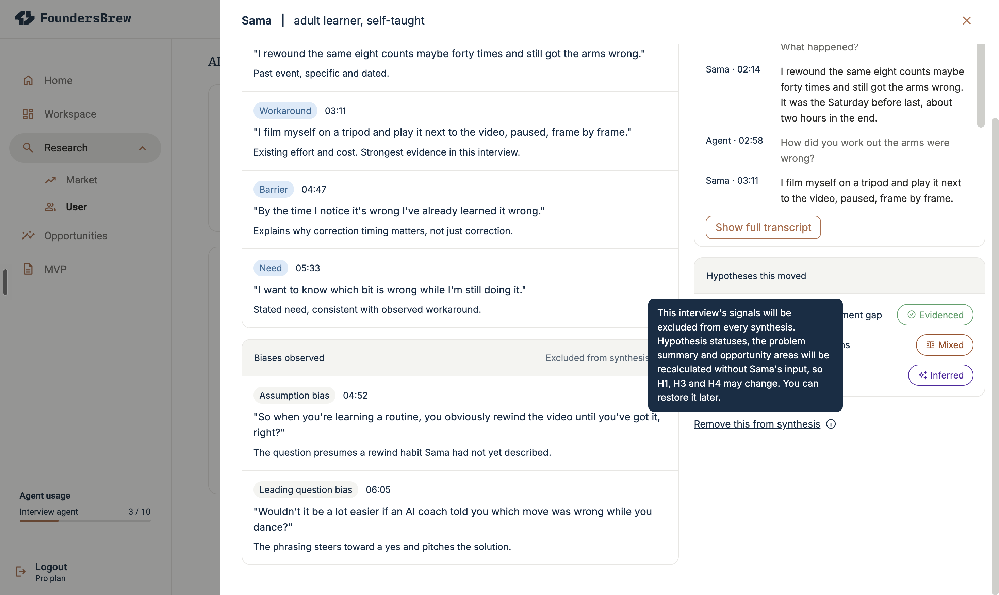
The interface explains how this decision impacts hypothesis statuses and other findings, while allowing interviews to be restored later. This ensures founders can intervene when evidence quality is in question rather than relying entirely on AI-generated conclusions.
But the human control can introduce another form of bias...
While exploring human-in-the-loop patterns in AI-first products, I realised that giving users more control doesn't automatically make a system more trustworthy. Allowing founders to exclude interviews introduced an unintended risk.
What if founders removed interviews simply because the findings challenged their assumptions?
This could reinforce the very confirmation bias FoundersBrew was designed to address. I needed to consider the difference between giving founders control over research quality and allowing them to selectively remove inconvenient evidence.
How might we prevent founders from selectively excluding interviews that challenge their assumptions, while still giving them control over the quality of their research evidence?
This pushed me to look beyond conventional UX patterns and led me to behavioural design. I came across research on accountability and decision-making, particularly how asking people to justify their choices can encourage more deliberate thinking. It made me reconsider something we often prioritise in UX, 'reducing friction'
What if removing friction wasn't always the right thing to do?
In this case, making interview exclusion effortless could allow founders to dismiss uncomfortable evidence without reflecting on why they were doing so. I explored introducing a small amount of intentional friction at the point of exclusion.
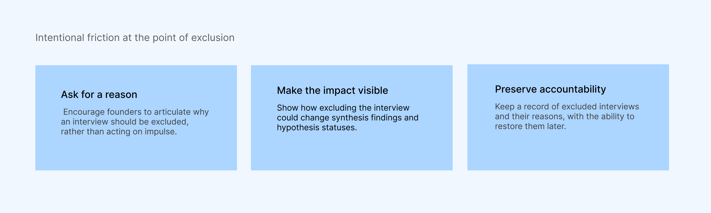
Founders would be asked to provide a reason for excluding an interview and understand how that decision could affect their findings. The original research would remain accessible, and exclusions could be reversed.
The intention was to create a moment where they could reconsider whether they were questioning the quality of the evidence or simply disagreeing with what it revealed.
Making exclusion decisions visible
Instead of simply marking the interview as excluded, I designed the interface to keep the reason and explanation visible alongside the decision, while providing an option to restore it. The behavioural reasoning was to make founders aware of their past decisions and encourage them to reconsider those choices when reviewing their research.

The outcome
Rather than adding human oversight as a final approval step, I embedded it throughout the research workflow. Founders provide the context, choose what to investigate, and decide which evidence to trust. The AI supports them through research, prioritization, interviews, and synthesis.
This creates a workflow where AI does the analytical work, while founders remain responsible for the decisions that shape their ideas.
The agent workflow and bias detection
In this work this is the piece that took me beyond UX to really think about how the agent architecture should look like. I defined the parameters to check the bias and what deterministic logic to write. The initial version did not have a bias check step, the idea was to create the agent with real time bias detection, and let the agent learn, however real-time bias detection would have added system complexity, additional LLM calls, and potential latency, affecting the natural flow of the conversation before the core experience was validated.
So I proposed a post-interview bias-checking layer that could evaluate the complete transcript against predefined guardrails.
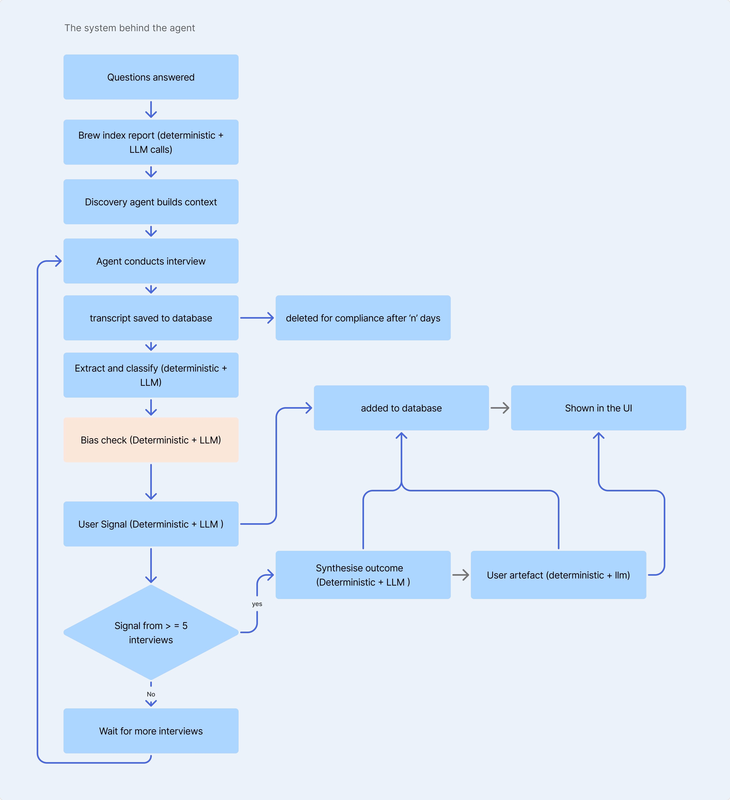
The trade-off: Post-processing cannot prevent bias during an interview, but it can identify questionable evidence before it influences founder's decisions.
Starting with uncertainty
To ensure that founders weren't making decisions based on misleading evidence it was important to get it the bias detection right, but where do you even begin when bias can take so many forms?
The first thing I needed to understand was which biases we could realistically detect. Trying to address every type of bias in the first version wasn't feasible. Bias detection would need to be introduced incrementally, with the system evolving and becoming more capable over time.
After conducting secondary research, I narrowed the scope to four types of biases that the first version would focus on
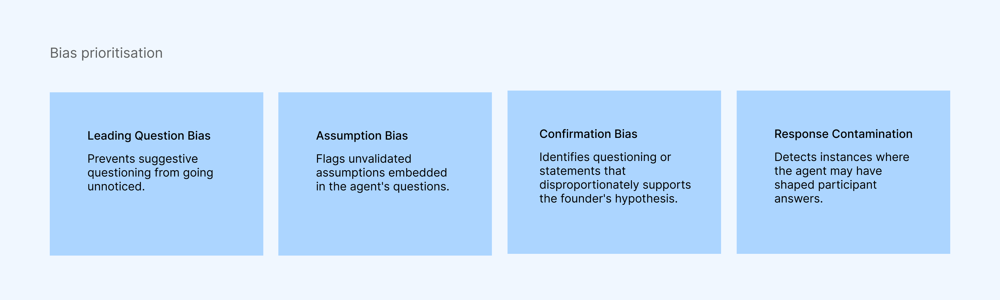
The design decision: I prioritised the biases most directly connected to agent behaviour and insight reliability, rather than attempting comprehensive bias detection in the first release. The selection was guided by three factors: impact on research quality, detectability from interview transcripts, and implementation feasibility.
Approach 01: Deterministic logic first, AI second
My initial approach was to build a rule-based detection system. Every interview transcript would first pass through deterministic logic, where predefined rules would flag potential biases and mark instances that needed further evaluation. AI would then step in to examine what the deterministic rules couldn't confidently determine. The reasoning was straightforward: let deterministic logic handle what could be explicitly defined, and use AI for everything else. This would also reduce the amount of processing the AI needed to perform.
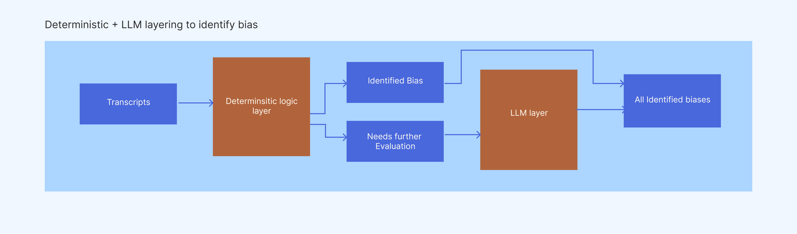
The problem with this approach
As I began thinking through how this would work with real conversations, I realised there was a fundamental flaw. How do you write exhaustive rules for something as nuanced as human conversation? The meaning of a statement depends on its context, how a question was asked, and what came before it. It wasn't realistic to anticipate every possible conversational scenario and translate it into deterministic rules.
The more I explored this approach, the clearer it became that the rules themselves would become a limitation.
Approach 02: AI-led bias detection with structured guardrails
Moving away from deterministic logic meant relying more heavily on AI to interpret conversations. But this introduced a different set of questions. How much could I trust the LLM's judgement? How would it distinguish a genuinely biased question from a legitimate follow-up? And how could I prevent it from making unsupported claims? As I started researching LLM-based detection, I realised how easily this could become a much larger problem than anticipated. There were varying degrees of severity of bias, and numerous conversational edge cases to consider.
I knew I needed to define the boundaries early, or I risked over-designing the system for Release 1.
Finding the right balance
The next challenge was understanding how to give AI enough flexibility to interpret human conversations without relying entirely on its judgement.
I explored three possible directions:
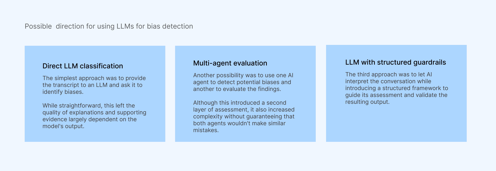
I needed a system with the flexibility to understand nuance of conversations, and also have structure to make the findings traceable and consistent. LLM with structured guardrails gave me that combination.
What should the model look for, what evidence should it provide, and when should a finding be considered strong enough to report?
With the approach established, the next challenge was translating it into a framework that could evaluate conversations consistently. It was important because it would influence the system's next best action and which target audience evidence founders trusted. Incorrectly flagging a valid exchange could be just as problematic as missing bias.
Evaluating the conversation
My first consideration was whether to evaluate each agent question independently or in the context of the conversation. For example, a question that sounds leading in isolation might simply be clarifying something the participant had already mentioned.
I defined a set of contextual questions to guide the model:
What had the participant already established?
Did the agent introduce a new assumption, benefit or suggested answer?
Did the question steer the participant towards a particular response?
How did the participant respond to that framing?
Evaluating the wider conversation required more interpretation, but reduced the risk of treating legitimate follow-up questions as biased.
Making findings traceable
The next decision was about what the model should return.
A bias classification alone wouldn't be useful. Even an explanation could sound convincing without being supported by the transcript. I required each finding to include the bias category, the specific agent turn, an exact quote, relevant conversational context and an explanation connecting the evidence to the assessment.
A stricter output structure added constraints, but made findings easier to inspect, challenge and trace back to the original conversation.
But when should bias be flagged?
Another challenge was determining how the system should handle uncertainty. A model could flag every potentially questionable exchange, but that risked treating ambiguous interpretations as established bias. I favoured reporting strongly supported findings rather than maximising the number of detected issues.
I also avoided numerical confidence scores and severity levels. Without sufficient calibration, these could communicate a level of precision the system hadn't demonstrated.
A conservative threshold could miss subtle instances of bias, but reduced the risk of incorrectly flagging valid research exchanges.
Defining what validation checks
The deterministic validation layer was already part of the chosen approach. Now I needed to specify exactly what it should verify and what should happen when a finding failed a check.
I defined six checks covering valid bias categories, transcript references, exact quotations, required fields, assessment status and duplicate findings.
These are the six checks
| Rule | Deterministic check | If it fails |
|---|---|---|
| 01. Category validation | Is the finding one of the four types of bias we look for? | Reject |
| 02. Reference validation | Does the finding point to a real question in the transcript, asked by the agent? | Reject |
| 03. Evidence validation | Does the quoted evidence match the transcript word for word? | Request correction |
| 04. Format validation | Is every required detail included, in the right format? | Request correction |
| 05. Assessment validation | Is the finding clearly marked as a detected bias? | Exclude |
| 06. Duplicate validation | Has the same bias already been reported for the same question in the transcript? | Merge or remove duplicate |
These checks improved structural consistency and traceability.
Bringing it together
These decisions shaped the framework around three principles
Context, Evidence & Evaluation
The LLM interprets conversational behaviour, supports its findings with transcript evidence, and deterministic checks validate the output against defined requirements.
Testing the framework to check if it could distinguish genuinely biased questions from legitimate follow-ups, especially when the difference was subtle
The framework now had defined rules for evaluating conversations, supporting findings with evidence and validating outputs. But having these guardrails in place didn't necessarily mean the model would interpret conversations correctly.
Designing the test scenarios
I used the risks identified while defining the guardrails to decide what needed testing.
The framework was designed to evaluate conversational context, report strongly supported findings and validate the evidence behind them. But I still needed to understand how these decisions held up across different types of exchanges. I identified five scenarios to challenge different aspects of the framework:
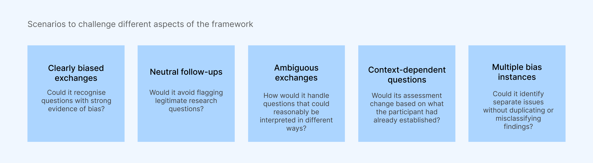
I wanted to compare the framework's assessments against the conversational evidence, paying particular attention to false positives and the reasoning behind each finding.
For each scenario, I evaluated the findings against three questions:
Detection: Did the framework identify the expected bias without flagging legitimate exchanges?
Reasoning: Was the assessment justified by the surrounding conversation, or was the model relying on an assumption?
Evidence: Could each finding be traced back to the correct exchange and supported by the transcript?
This helped me distinguish between problems with the model's interpretation of bias and issues with evidence validation.
Setting up an initial test
Before considering the framework reliable enough for real customer interviews, I wanted to understand how it behaved across different conversational scenarios. I built a lightweight testing tool using a prototyping platform, allowing me to submit interview transcripts, run them through the framework and inspect the resulting findings.
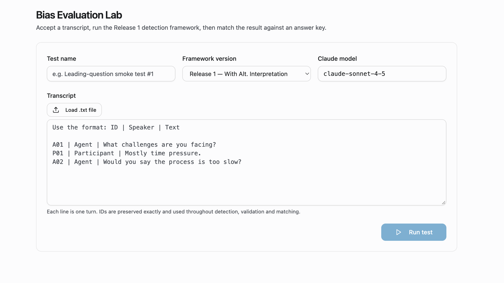
The goal was to identify weaknesses in the framework's reasoning, particularly where an incorrect bias flag could undermine valid customer evidence
What the testing revealed
I ran multiple customer discovery transcripts through the testing tool, using a mix of synthetic interviews and examples drawn from existing research sources (Anthropic, GitHub). I examined the findings to understand how the framework handled different types of questioning, particularly where the distinction between bias and legitimate follow-ups was less obvious.
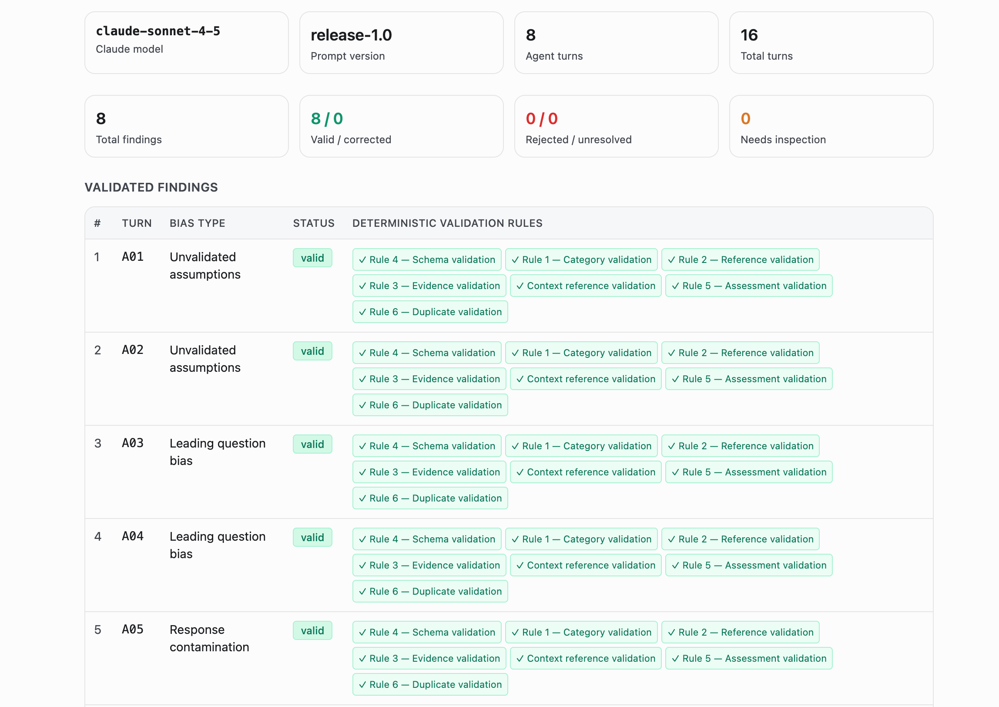
The initial testing revealed three things:
Clear bias was easier to identify. The framework recognised strongly leading questions and unsupported assumptions, with findings that could be traced back to the transcript.
Neutral questioning was generally handled well. In the neutral test scenario, the framework returned no bias findings rather than flagging issues unnecessarily.
Ambiguity was the bigger challenge. In some cases, the model flagged legitimate follow-up questions because they appeared leading in isolation, even though the participant had already introduced the idea.
The key learning: A finding could pass every deterministic validation check and still be an incorrect interpretation of the conversation.
This highlighted the need to strengthen how the framework evaluated competing interpretations before reporting bias.
Refining the framework
The testing revealed that the framework needed more than contextual information to make a defensible assessment. In some cases, the model treated legitimate follow-up questions as bias, even when the participant had already introduced the idea being discussed.
How could I make the framework challenge its own interpretation before deciding to report a finding?
This led me to introduce an additional question into the contextual evaluation: “Was there an equally plausible, non-biased interpretation?” But simply generating an alternative explanation wasn't enough. The model also needed to weigh that explanation against the evidence supporting bias. I refined the decision criteria so that a finding should only be reported when the biased interpretation is more strongly supported than a reasonable non-biased explanation.
The trade-off: This introduced a more conservative reporting threshold, potentially reducing unsupported findings while increasing the risk of missing subtle bias.
Where the framework stands
The outcome is a working prototype of a bias detection framework that combines LLM-based conversational evaluation with structured evidence requirements and deterministic validation. The initial testing demonstrated that the framework could identify clearly biased exchanges, leave a neutral interview unflagged and produce findings that could be traced back to the original transcript. It also exposed challenges in handling ambiguous and context-dependent questions, informing improvements to how the framework evaluates competing interpretations. Version 1 establishes a foundation for identifying and evaluating potential bias in customer discovery interviews, with further improvements planned for future releases.
Developer hand-off
To make the framework easier to implement and build upon, I documented the decisions behind its design alongside the technical requirements. The hand-off covered the four bias categories, contextual evaluation criteria, expected output structure, deterministic validation rules and how the system should handle findings that fail validation. I also outlined the responsibilities of the LLM and validation layer, making clear which decisions required interpretation and which could be checked programmatically.
How this shows up in the product and affects synthesis
I used my experience in UX research and did a desk research to define how to handle potentially compromised interview data. One rule for any research finding is that it should remain grounded in what participants independently said or did, rather than conclusions shaped by the interviewer's assumptions.
This influenced an important decision for FoundersBrew
Exchanges flagged for bias would be excluded from evidence synthesis, but remain visible to the founder.
This created two distinct outcomes:
For the system
Compromised evidence would not contribute to synthesis.
For the founder
The bias would remain visible, making it easier to understand why certain responses were not considered.
What founders see today
Testing with founders also pointed out the TMI problem
While reviewing how Bias is showing up in the system I also got feedback on how the overview page has a lot of information and how they only needed to know which of their assumptions were validated, what was challenged, and what behaviour was still left to test. They can then decide what to do next.
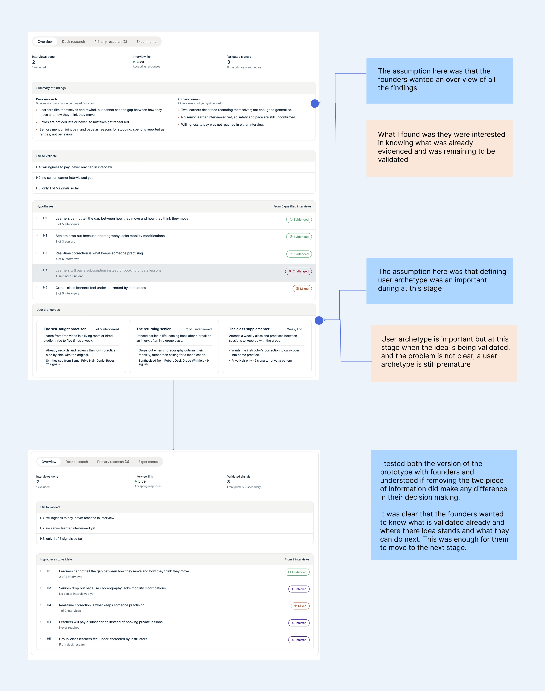
Once the bias detection had structure, I started focusing on the participant's interview experience
The interview experience
When I was designing the interview experience, I first wrote down how the experience feels like when I conduct a one-to-one user interview, and prioritised what should go in phase one and what can wait, based on what people expect from an agent.

Mapping the users journey with HAX
While defining the interview experience I referred to the HAX guideline from Microsoft to define how the system should behave. This adaption is at a very beginning stage and will grow as the FoundersBrew agent becomes more capable.

How HAX translates in the product UI
HAX guideline: Make clear what the system can do
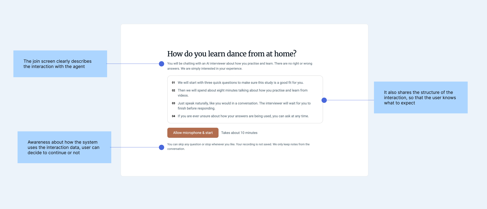
HAX guideline: Match relevant social norms

HAX guideline: Supporting efficient dismissal and participant control
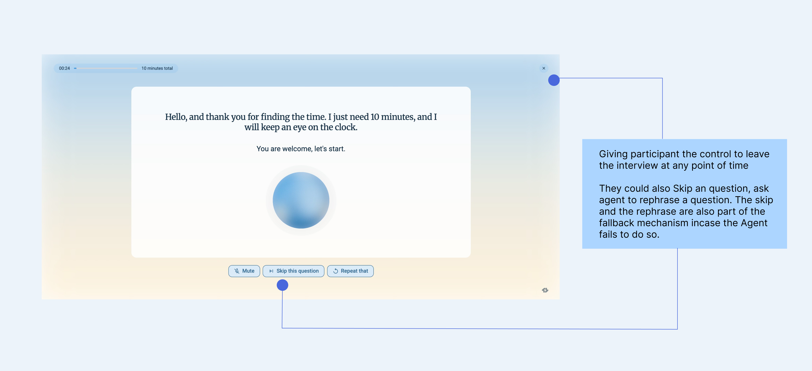
My takeaways
Clarity comes through action. When faced with uncertainty, breaking a complex problem into smaller, testable decisions helped me move forward rather than waiting for complete clarity.
Intentional friction can be good friction. Not every interaction needs to be effortless. Sometimes encouraging people to pause, question an outcome and take responsibility for their decisions creates a more meaningful experience.
Combining LLMs with deterministic workflows creates a more accountable system. LLMs can interpret conversational context, while deterministic checks make outputs more structured, traceable and easier to verify.
Trust comes from transparency, not certainty. AI-generated findings shouldn't be trusted simply because they sound convincing. Making the underlying evidence visible and allowing people to question an assessment is just as important as producing the assessment itself.